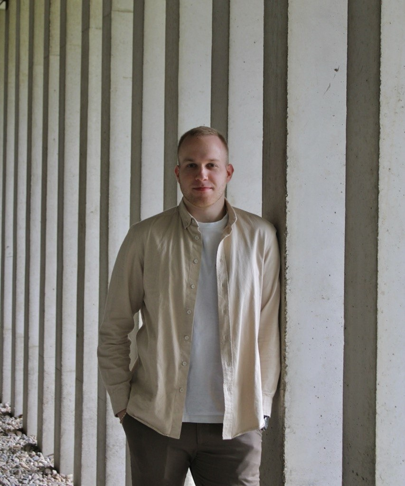

I build reliable full-stack products end to end — from .NET Core APIs to React front ends — and ship features to production. Currently at Quadient, where the front end is built on Bobril (a React-based framework), and I also automate parts of our workflow with custom AI tooling.

My path runs from IT support and enterprise SQL databases in Ukraine, through an Erasmus exchange in Spain, to building production software at Quadient in the Czech Republic. Along the way I finished my Computer Science degree at the University of Pardubice.
I like owning the whole stack: designing and building .NET Core services, writing React front ends, modeling the database underneath, and shipping through CI/CD. Increasingly, I also lean on AI tooling to remove the repetitive parts.
Full-stack development on enterprise-scale SaaS products in an international team.
An international semester that sharpened my English, intercultural communication and adaptability — becoming more flexible, independent and confident working in multinational teams.
Provided SQL database support: writing and optimizing queries, maintaining data organization, and assisting with data-related requests.
A backend-focused platform where employees query internal documents and get answers scoped to their access rights. Built to demonstrate layered architecture, authentication with role-based access control, audit logging and automated tests — with an LLM handling the retrieval layer. Currently in active development.
Production feature work on Quadient Impress, a multi-channel customer communications platform for automating and delivering business documents at scale. Full-stack contributions across a .NET Core back end and a front end built with Bobril (a custom React-based framework), shipped through Azure DevOps CI/CD within an international engineering team.
Bachelor's degree — Computer and Information Sciences
Erasmus Exchange Program · Spain
Open to full-stack roles and collaborations. The fastest way to reach me is below.